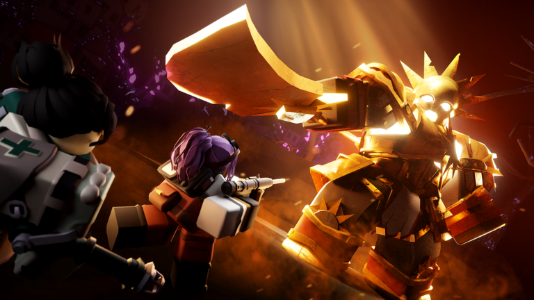

🌙 Tower Defense Simulator: Solar Requiem Night III vine pe 23 octombrie

Solar Requiem Night III vine în Tower Defense Simulator: de vineri, 23 octombrie, 19:00, până vineri, 30 octombrie, 18:00 (ora României). 🌙
Teaser-ul oficial e doar poveste: „If I had known then that this is where I would stand, I would have told you sooner. But I think you already knew.”
Despre gameplay (hartă, inamici, boss) nu s-a anunțat nimic încă.
Night II, cu harta nouă și boss-ul unic: https://pyromanc3r777.github.io/vexu-hq/posts/tower-defense-simulator-solar-requiem-night-ii-e-live.html
Follow pe TikTok @vexu_online și abonare pe YouTube la VEXU Online. Follow = Au ce bile! 💥